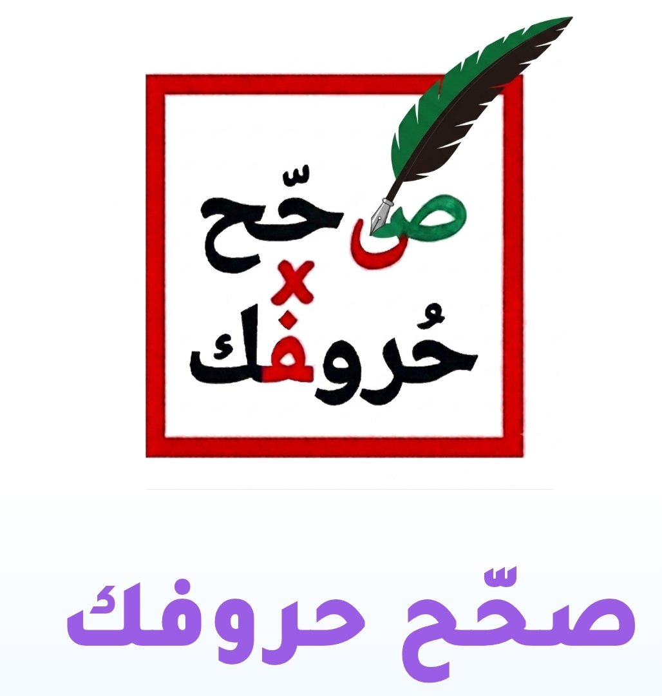

أدخل بريدك وسنرسل لك رابط إعادة تعيين كلمة السر
لقد قمنا بوضع أخطاء مقصودة في بعض الكلمات، وأحياناً حركات خاطئة على الكلمات، وذلك لتحفيزكم على تصحيحها مع أبنائكم.
هذا يُعطينا مؤشراً على أنكم تُتابعون الخطة التعليمية للطفل.